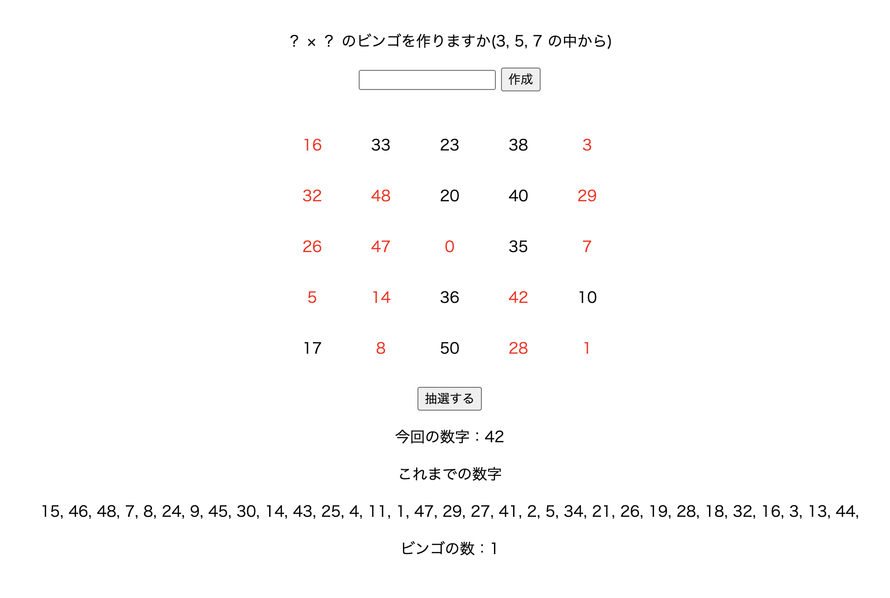

戻る
ビンゴゲーム
【内容】
3,5,7マスのビンゴを生成することができる。
抽選およびマス開け,ビンゴのカウントが簡単にできるが、
これだけではソロプレイになってしまうのが欠点である。
何手目でビンゴになったかを競うのには使えそうである。
【構成】
3, 5, 7マスの入力を受け取る。
3〜7以外は正規表現ではじき、4と6はJavaScriptでアラート表示をしてはじく。
↓
3なら1〜25, 5なら1〜50, 7なら1〜75の間で数字をランダムに生成し、
これまでに被りがなければBingoインスタンス(「数値」と「穴が開いたか」のフィールドを持つ)
を生成してArrayListに格納する。
完成したら中央の数値は0に上書きする。
↓
穴を開ける数字を抽選する。
抽選数字を格納するArrayListを用意しこれまでに被りがない数字を生成する。
↓
Bingoがあるかをカウントする。
Bingoのパターンは
①斜め(左斜めと右斜めの2個)
②縦列(ビンゴ生成時の入力数値の数)
③横列(ビンゴ生成時の入力数値の数)
です。
そして始点(①なら左上と右上)の穴が開いているなら、
左上から右下に進む場合はビンゴ生成時の入力数値の数+1
右上から左下に進む場合はビンゴ生成時の入力数値の数-1
といった具合に進めて穴が開いているかを確認してカウント。
カウント数がビンゴ生成時の入力数値と同じになればビンゴとなる。
その処理を①②③でそれぞれif文を記述している。
【工夫や学び】
数値のデータだけではビンゴを成り立たせる方法が
思いつかなかったためインスタンスを使うことにした。
他にもビンゴカードの数字や空いた穴のデータを維持するためにセッションを使ったり、
ビンゴになる場合のアルゴリズムを考えたり、
さまざまな技術が必要であり刺激ある制作ができたと感じている。
